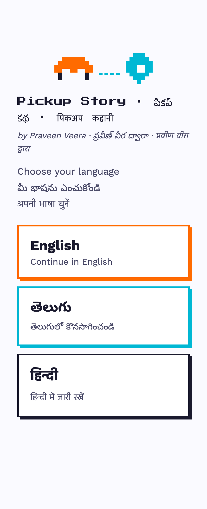
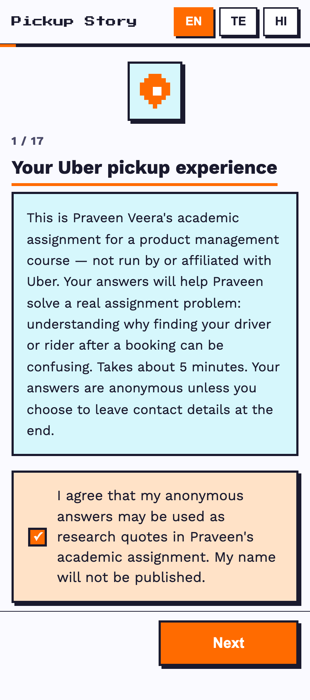
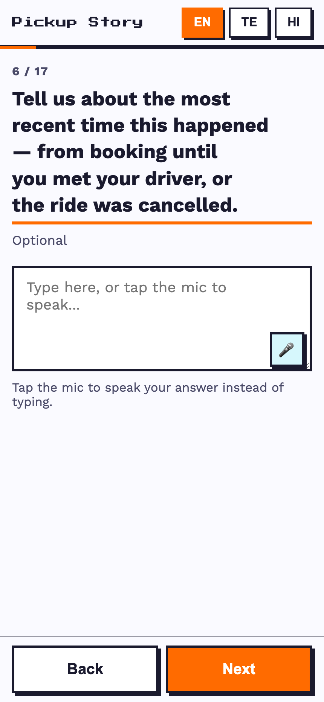
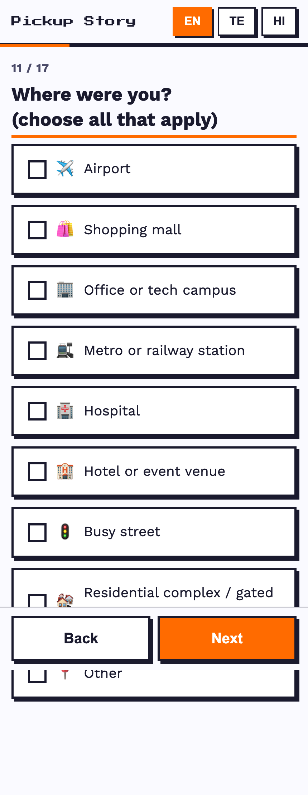
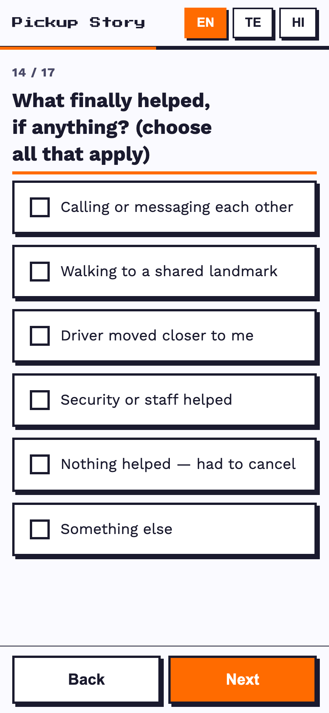

App details, screenshots, online survey evidence, internet research, analysis, and explicit limitations.
A mobile-first online survey with rider and driver branches, a consent gate, optional qualitative prompts, and structured tags for problem type, location, action, delay, recovery, and recurrence.

Three-language entry screen

Consent gate selected before continuing

Optional open-ended story prompt

Complex-location tags

Question: what finally helped?
| Action | Mentions |
|---|---|
| Called | 17 |
| Waited | 9 |
| Moved | 8 |
| Messaged | 5 |
| Cancelled | 4 |
| # | Insight | Evidence | Strength |
|---|---|---|---|
| 1 | Difficulty is meaningful, not universal | 24/51 recent users; 34/62 reported no issue | Strong, directional |
| 2 | For affected respondents, the problem often recurs | 23/28 issue cases reported prior occurrence | Strong within subgroup |
| 3 | Complex environments concentrate problems | Airport 10; residential 7; mall 6; office 6 | Strong pattern |
| 4 | Arrived does not mean rider and driver can meet | Wrong-pin and similar-gate reports; one detailed cross-road case | Moderate |
| 5 | Calling and messaging are the main recovery layer | Calling 17; messaging 5; helpful in 20/28 cases | Strong |
| 6 | The rider often absorbs recovery effort | Waited 9; moved 8; driver moved helped 3 | Moderate–strong |
| 7 | Failures can create material delay | 7/10 time-tagged cases exceeded five minutes | Moderate |
| 8 | Cancellation is multi-causal | Location overlaps with destination, fare, payment, and rain | Moderate |
| 9 | Some respondents found no effective recovery | 6/28 selected nothing helped | Moderate |
| 10 | Finding the ride includes vehicle identification | One vehicle-number mismatch report | Weak edge case |
01-Internet-Research/Competitor-Analysis.mdDesk-Research-Report.mdSource-Register.md
02-Survey-Method/Survey-App-Details.mdLive-URL.txtScreenshots/*.png
03-Anonymized-Responses/Sanitized-Survey-Evidence.xlsx
04-Analysis/Survey-Dashboard.pngInsight-Traceability.md
The presenter-visible video and working link remain pending. Record under five minutes, upload, enable evaluator access, and add the link before submission.